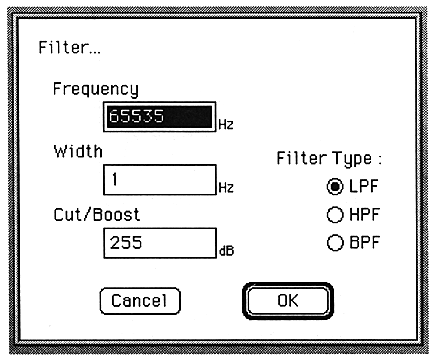

Frequency
Enter the frequency below which you want to cut in Hz.
You can set a value from 1 to 65535.
Width
Enter the frequency below which you want to cut in Hz.
You can set a value from 1 to 65535.
Valid only when Filter Type is BPF. Otherwise, it will be grayed out.
Cut/Boost
Enter the frequency band to cut in dB.
You can set a value from 1 to 255.
Filter Type
Select the filter to set.
Select LPF, HPF, BPF with radio buttons.